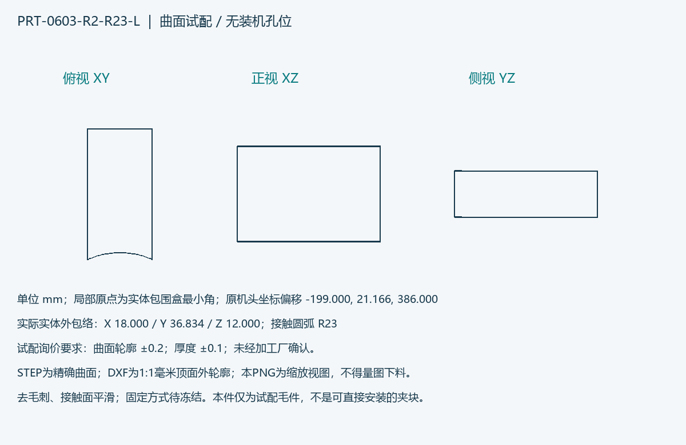
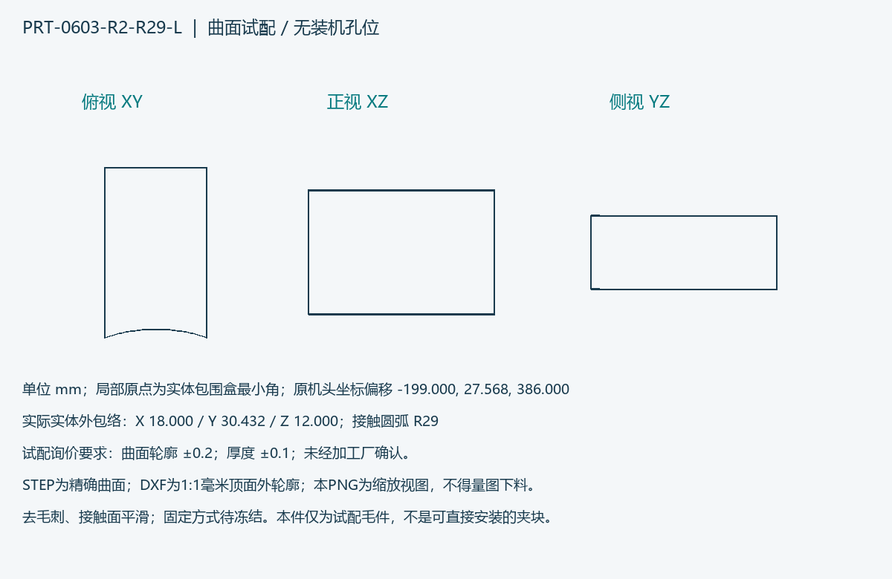
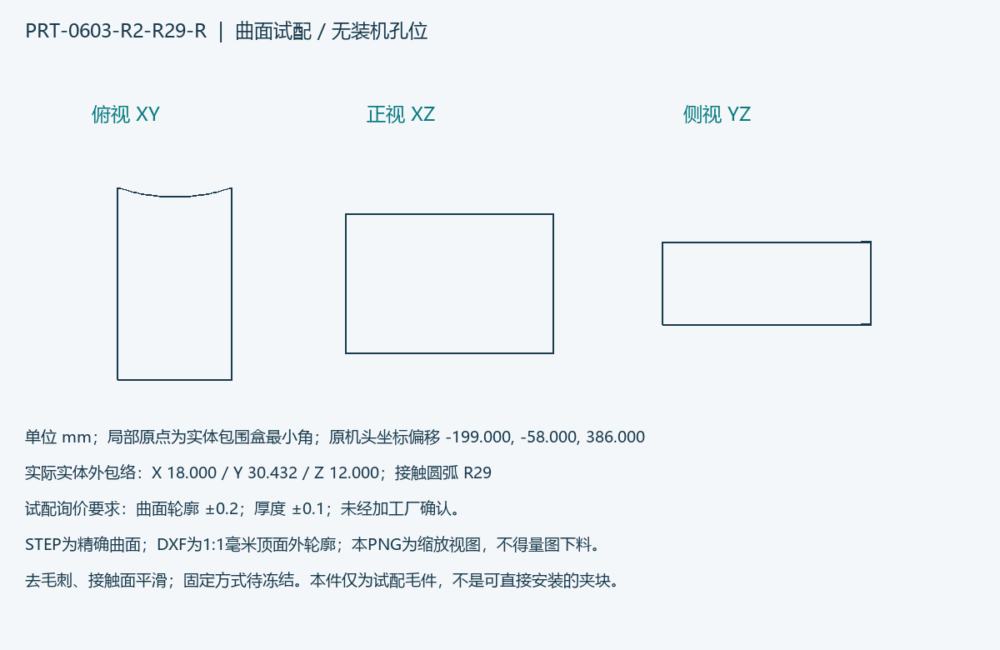
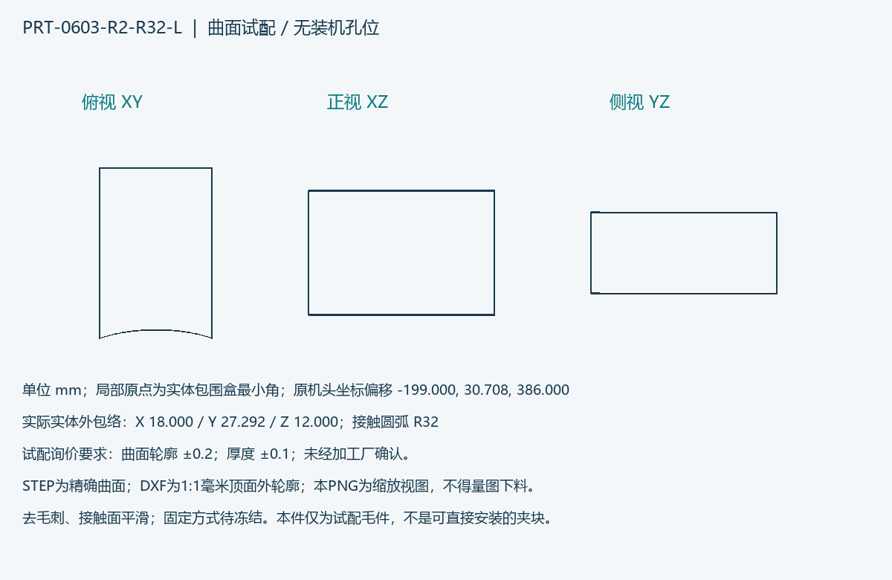

R2已选择AS-30 36只、AS-10 24只、MAVIS350 12只；实际未采购收货。
优先6061-T651机加工板件、POM-C可换试配毛件、透明PC管件询价。
本目录是R1的补充；8个STEP和DXF只含夹块试配毛件，固定接口待冻结。
运行 tools/build_r2_prototype.py 重建本包。运行 tools/check_r2_prototype.py 校验。
所有PLAN/BLANK记录重建时会覆盖，请复制到单独实测目录后填写。



